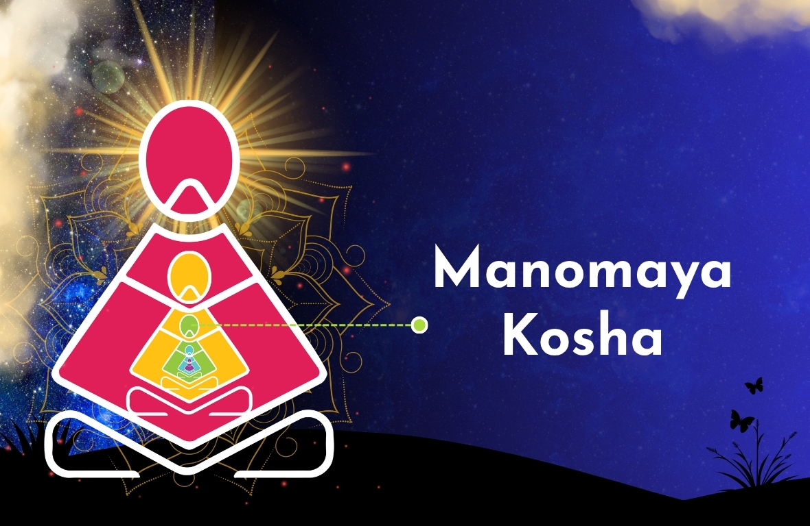

The Mental Control Centre
Manomaya Kosha is the third layer of human existence in yogic philosophy—the "mental sheath" composed of thoughts, emotions, and ego.

The word Manomaya comes from two Sanskrit roots:
- Manas (mind)
- Maya (made of)
- It is the layer of our being composed of thoughts, memories, and emotion
- Every piece of sensory data we receive, from the sound of rain to the taste of a favourite meal passes through this sheath.
- In yogic philosophy, a sheath (Kosha) is like a layer or covering that surrounds our true self, the Atman (pure consciousness).
- Each sheath represents a different aspect of our experience, from the physical body to the realms of wisdom and bliss.
The Manomaya Kosha sits at a crucial juncture between physical existence and higher wisdom.
It acts as a bridge between the Pranamaya Kosha (energy body) and the Vijnanamaya Kosha(wisdom body). When it is balanced, it enables a spontaneous flow of energy, clarity, and emotional stability.
Modern Challenges To The Manomaya Kosha
Today’s digital world poses unique challenges to maintaining a balanced mental sheath:
- Information Overload: Endless notifications, breaking news, and social media comparisons leaves the Manomaya Kosha overstimulated.
- Chronic Stress: Work pressures and personal responsibilities can keep the mind in a loop of anxiety and overthinking.
- Digital Distraction: Scrolling endlessly numbs the mind instead of nurturing it.
Practical Ways To Balance The Manomaya Kosha
Restoring balance is not about escaping modern life; it is about managing the mind effectively.
MeditationRegular meditation will gradually quieten the mind and can create space between thoughts, offering clarity and peace
Conscious BreathingBreathwork (Pranayama) directly influences the Manomaya Kosha by calming mental fluctuations and restoring focus.
AwarenessRegular reflection helps identify recurring emotional patterns and break unhealthy cycles.
Emotional cleansingJust like physical hygiene, mind needs cleansing. Avoid negative conversations, toxic relationships, and overstimulation.
Digital DetoxTaking regular breaks from screens. Silencing notification, reducing social media exposure, and allowing the mind to rest.
The Manomaya Kosha is both a gift and a challenge.
- It has the power to create mental illusions but also the ability to dissolve them.
- Taking care of this mental layer—through meditation, breath, and conscious living— it is possible to unlock a more harmonious and fulfilling life.
- Life’s journey is not about erasing thoughts or emotions.
- It is all about understanding the mind balancing emotions and, ultimately, transcending their limitations.
Sittha Viruthi Yoga is an Inner Transformation Yoga Program . Based on Ancient Siddhar Science it is a Yoga therapy for Health , Relationships, Mind and Wealth . Sittha Viruthi Yoga imparts Holistic Conscious Living Practices .This Yoga System removes Negative Karma , heals the Body , Mind and Soul through powerful Yogic Healing Techniques like :
- Meditation
- Chakra Cleansing
- Breathing Exercises ( Pranayama )
- Awareness
- Manifestation
- Thithi
- Forgiveness